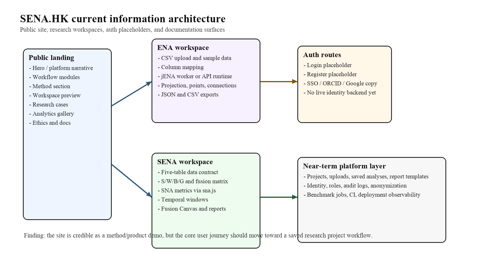
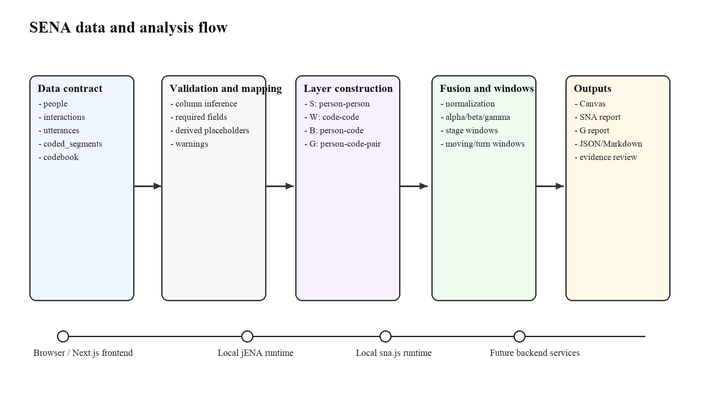
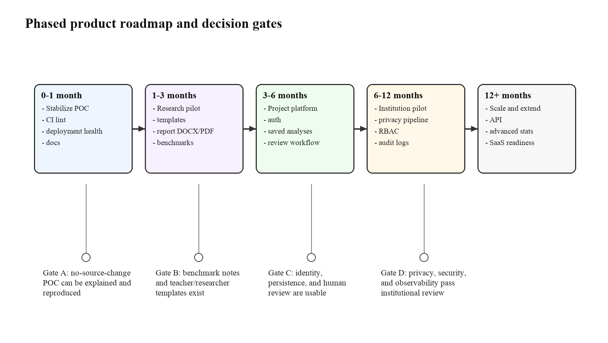
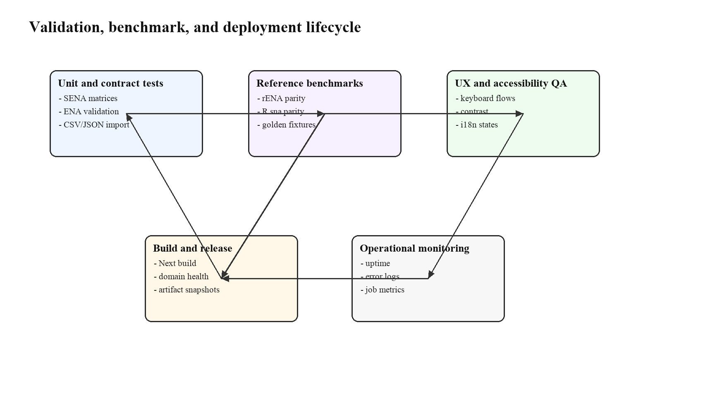
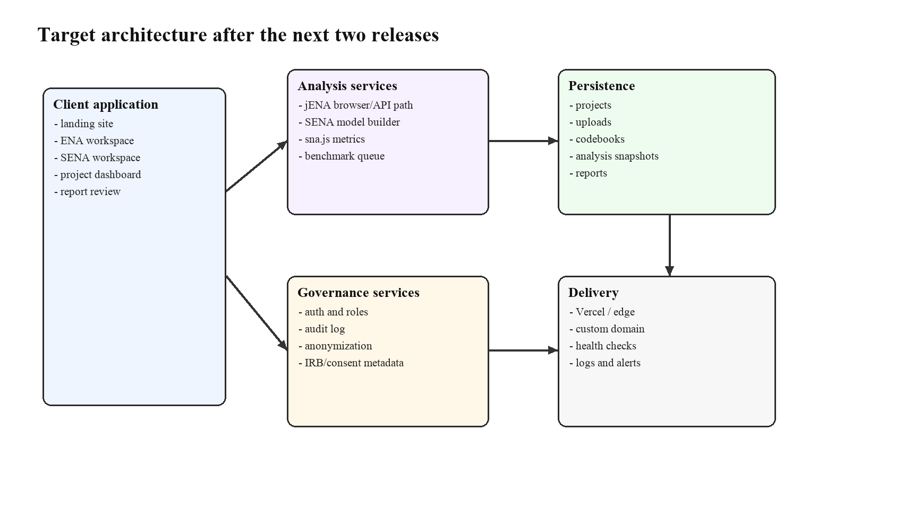

面向 www.sena.hk 网站与当前 SENA 代码库
2026-06-08
本报告面向 www.sena.hk 网站与当前本地 SENA
项目代码库，目标是把已有研究原型、方法文档和 Next.js
代码基础整理为一份可执行的开发计划。当前项目已经不是一个单纯的静态宣传页：sena-hk-template
中的 /workspace/ena 可以通过本地 jena-js 运行
ENA 分析，/workspace/sena 可以从 SENA
五表数据契约构造社会层 S、概念层
W、person-code 桥接层 B、person-code-pair
贡献层 G 和加权 fusion matrix，并在浏览器中呈现 Fusion
Canvas、SNA 指标、temporal windows、evidence inspector 与 JSON/Markdown
报告导出。这个基础足以支持研究演示、教师协作试点和方法论文配套原型。
但当前项目仍处于高质量 proof of concept 与 research platform template
阶段，而不是 production SaaS。主要缺口集中在六类：第一，www.sena.hk
当前线上访问在本次自动化检查中返回
502，域名、部署、健康检查与告警需要纳入第一批运维工作；第二，登录和注册页面是企业级体验占位，尚未接入身份认证、角色权限、项目持久化和审计日志；第三，npm run lint
已可非交互运行并通过，但 test/build/lint 还需要进入
CI；第四，jena-js 已有随包 Vitest 与 rENA-derived golden
parity，但 benchmark
仍需扩展到更多公开数据集、参数组合和版本化差异说明；第五，sna.js
已接入核心指标但仍是 starter port，R sna
库的大量函数仍待移植或明确排除；第六，AI-assisted
interpretation、匿名化、human review、IRB/consent metadata
与报告模板还没有成为可保存、可审计、可复现的工作流。
本报告建议将 SENA 的产品愿景定义为“面向教育研究与协作学习改进的 evidence-traceable social-epistemic analytics platform”。近期不要把方向发散到通用组织监控、政策评分或广义 SaaS，而应把研究、教育和 instructor-facing learning analytics 做深。具体路线是：0-1 个月稳定 POC 和部署；1-3 个月形成研究/教育 pilot package；3-6 个月补项目平台、身份认证、保存分析与 human review；6-12 个月进入机构试点，补匿名化、RBAC、审计日志、批处理与报告治理；12 个月后再考虑开放 API、扩展统计模块和更广泛产品化。
这个路线与项目已有技术形态一致。SENA 的核心优势不是“把 SNA 图和 ENA
图叠在一起”，而是以 S/W/B/G 与 fusion matrix
组织数据、证据、参数和解释边界。只要后续开发继续坚持数据契约、benchmark、human
review 和隐私治理，SENA
有机会成为一个既可发表、可教学、可复现，又能被机构逐步采用的研究平台。
SENA 的长期愿景应当围绕一个清晰问题展开：在协作学习、教师团队、课程设计和知识建构场景中，研究者经常同时想知道“谁和谁互动”“哪些概念、论证动作或知识建构动作被连接起来”“谁推动了这些概念连接”“这些结构如何随时间变化”。传统 SNA 能解释社会互动位置，却无法说明互动内容；传统 ENA 能解释概念和话语动作之间的连接，却不天然说明这些连接由哪些人、角色或群体推动。SENA 的机会正是在两者之间建立可计算、可视化、可审计的 bridge。
因此，SENA 不应首先被包装为泛化的数据可视化工具，而应定位为一种有方法论边界的 research workflow。目标用户可以分为四层。第一层是教育研究者、学习分析研究者和 CSCL 研究团队，他们需要将论坛、课堂转录、教师协作记录、lesson study 语料或知识建构数据库转化为可发表的图、表、方法说明和证据链。第二层是课程团队、教师教育者和教学改进负责人，他们不一定追求论文发表，但需要用结构化证据复盘活动设计、支架效果、学生小组协作与教师团队对话。第三层是方法开发者和研究助理，他们需要管理 codebook、导入数据、做 benchmark、导出矩阵、复现实验并维护报告。第四层是机构管理者或伦理/数据治理负责人，他们关心权限、去标识化、审计、数据保留和误用边界。
当前网站已经有面向这些用户的雏形：首页描述了 workflow
modules、method、workspace preview、research cases、analytics
gallery、ethics 和 docs；/workspace/ena 提供 jENA
工作区；/workspace/sena 提供 SENA Fusion Studio
MVP；登录注册页暗示未来的机构级 SSO、ORCID、Google
与计划选择。但目标用户在真实使用时不应被要求先理解全部方法术语。产品上更稳妥的方式是围绕任务组织入口：创建项目、上传数据、选择或导入
codebook、运行 ENA/SNA/SENA、检查证据、保存 snapshot、生成
human-reviewed
report。方法论解释仍然重要，但应嵌入每一步的参数说明、警告和导出元数据。
Table 1
Target users, core jobs, and product implications
| 用户群体 | 主要任务 | 当前支持度 | 下一步产品含义 |
|---|---|---|---|
| 教育/学习分析研究者 | 导入语料、运行 ENA/SNA/SENA、形成可发表证据 | 高 | 优先补 benchmark、APA 报告、figure export、方法说明模板 |
| 教师与课程团队 | 复盘协作过程、识别阶段变化、连接证据与教学行动 | 中高 | 设计 teacher-facing dashboard、reflection prompts、低术语解释 |
| 研究助理/方法开发者 | 管理数据契约、codebook、参数、版本和导出 | 中 | 增加 project manifest、saved analyses、版本化 codebook |
| 机构管理员/伦理负责人 | 审计访问、控制权限、管理匿名化和保留策略 | 低 | 后置但必须规划 RBAC、audit log、consent metadata、retention |
| 外部合作者/评审者 | 查看报告、复核证据、理解限制 | 中 | 增加只读分享、review status、evidence appendix |
Note. 当前支持度依据本地代码、README、页面结构、测试结果与已有项目文档判断，不代表真实用户调研结果。
当前工作区根目录不是一个 Git 仓库，但 sena-hk-template
是实际网站项目。项目技术栈包括 Next.js 14 App Router、React
18、TypeScript、Tailwind CSS、Framer Motion、lucide-react、本地
jena-js 和本地
sna.js。package.json 中核心脚本为
dev、build、test、start
和 lint。本轮更新后的运行结果显示：npm test 在
sena-hk-template 中通过 6 个测试文件、69
项测试；npm run build 成功生成
/、/login、/register、/workspace/ena、/workspace/sena
和动态 /api/ena/run；npm run lint
已非交互通过且无 warnings/errors；vendor/sna-js 的
npm test 通过 12 项 starter graph
tests；vendor/jena-js 的 npm test 通过 3
个测试文件、24 项测试，并覆盖 toy 与 research-shaped rENA golden
parity；vendor/jena-js 的 npm run typecheck 和
npm run build 也通过。
首页由 app/page.tsx 串联多个组件，包括
NavBar、Hero、Workflow、MethodSection、WorkspacePreview、ResearchCases、AnalyticsGallery、EthicsSection、DocsSection
和 Footer。这个结构适合展示方法和愿景，但还不是一个
workbench-first 的产品首页。NavBar 支持
ENG、繁体、简体三种语言，并通过 LanguageProvider 存储在
localStorage；主题通过 ThemeProvider 在 localStorage 中保存
day/night
状态。多语言支持目前覆盖导航和主要营销段落，但组件内仍有大量英文硬编码，工作区表单、提示、按钮、图表标题和警告文案尚未完全国际化。
/workspace/ena 是可运行的 jENA 工作区。它支持 CSV
sample、CSV upload、column mapping、model/window/weight/node-position
参数选择、browser worker 与 Next API
两种运行路径、运行取消、结果图、variance、points CSV、connections CSV 和
JSON 导出。核心逻辑在 lib/ena，包括 CSV 解析、mapping
inference、输入验证、jena-js 执行和 plot model
构建。这个模块的价值在于证明浏览器内运行 ENA 是可行的，也提供了 SENA
方法中 epistemic network 层的独立入口。
/workspace/sena 是当前项目的核心资产。它支持上传 JSON
contract 或多个 CSV 表，按
people、interactions、utterances、coded_segments、codebook
进行 table inference 和 column mapping，随后构造模型、显示 Dual Lens
Dashboard、Fusion Canvas、Inspector、SNA Metrics、Community
Detection、Pair Contribution G、SENA Matrices、Temporal Window Builder
和 Report Generator。这个页面已经把 SENA
从概念变成可交互模型；但它仍主要在前端状态中运行，缺少 saved
project、后端存储、权限控制、长期 job 管理和正式 report artifact
pipeline。
www.sena.hk 的生产状态需要单独处理。本次通过公开访问
https://www.sena.hk 时未能获得可用页面，返回 502
或没有可检索索引。这并不改变本地代码可构建的事实，但说明域名或部署链路已经是第一优先级运维风险。对于外部评审、合作者和试点学校来说，域名健康比本地
build 成功更直接地影响可信度。
Table 2
Current codebase inventory and development implications
| 模块 | 当前状态 | 主要价值 | 技术债或风险 |
|---|---|---|---|
| Next.js site shell | App Router、Tailwind、主题与语言 provider 已成型 | 快速演示、低后端依赖、可静态构建 | 首页仍偏展示，工作区状态不可保存 |
| ENA workspace | CSV、mapping、jENA worker/API、plot/export | 可运行 ENA 分析入口 | jENA 已有随包 parity tests，仍需公开基准与 CI 固化 |
| SENA workspace | S/W/B/G、fusion、SNA metrics、temporal windows、report JSON/MD | 当前最强产品资产 | 无持久化、无权限、无正式 DOCX/PDF pipeline |
| SNA runtime | 本地 sna.js 已接核心指标 |
浏览器/Node 可用 SNA 指标 | R sna 大量函数仍 pending |
| Auth pages | login/register UI 完成度较高 | 为机构路线预留入口 | 无真实身份、SSO、session 或 RBAC |
| QA scripts | Vitest、jENA parity、lint、typecheck 和 Next build 可运行 | 可形成 CI 基础 | 验证结果需进入 CI/release notes |
| Deployment | 本地 build 成功 | 可部署到 Vercel/Node | www.sena.hk 当前健康异常，需监控 |
Note. 本表依据 2026-06-08 本地检查结果。线上域名状态应在部署修复后重新记录。
Figure 1
SENA.HK current information architecture

Note. The figure summarizes the current public-site and workspace surfaces inferred from the Next.js components and routes.
当前 SENA
最值得肯定的地方，是研究模型已经进入可运行代码，而不是停留在概念页。也正因为已经可运行，技术债应当更具体地处理。第一类技术债是工程自动化债。测试、构建和
lint 均可在本地非交互通过，但
CI、部署健康和告警还没有自动检查。没有这些基础，后续任何
UI、分析或报告改动都可能在合并后才暴露问题。第二类技术债是 runtime
provenance 债。jena-js 和 sna.js 都是本地
vendored packages，项目记忆明确要求不要误以为网站直接运行官方 rENA R
包；但用户和报告读者需要知道当前 JavaScript runtime 与 R reference
的关系、差异和验证状态。第三类技术债是状态管理债。当前工作区大量状态在浏览器中即时计算，适合
POC，但项目、上传、报告、review
和导出没有持久化对象。第四类技术债是治理债。登录注册页面、伦理区块和报告字段已经表达了治理愿景，但
auth、RBAC、audit、consent
metadata、匿名化和保留策略还未落到数据结构和流程。第五类技术债是解释边界债。页面已有
guardrail，但导出报告和未来 AI interpretation
也必须同样保留这些限制。
产品机会则来自这些技术债背后的真实用户需求。研究者需要的不只是漂亮网络图，而是可以被审稿人追问时仍站得住的参数、证据和 benchmark。教师团队需要的不只是 matrix，而是能在复盘会议中讨论的阶段变化、原话证据和行动建议。机构需要的不只是 dashboard，而是能回答“谁能看见什么、数据保留多久、AI 是否参与、导出是否留痕”的治理能力。因此，SENA 的机会不是做又一个 analytics gallery，而是把 social-epistemic analysis 做成一个可复现、可审计、可教学的完整链条。
从商业和学术传播角度看，最优机会也不是立即推通用 SaaS。近期更现实的产品包是“研究/课程试点包”：标准数据模板、示例数据、codebook 模板、SENA Fusion 工作区、报告模板、伦理声明和 benchmark appendix。这个产品包可以服务论文、研究基金、教师发展工作坊和课程改进项目。它的销售或合作对象可以是研究团队、教育学院、学习分析实验室、教师专业发展项目，而不是泛化企业客户。只有当试点证明方法稳定、报告有用、治理可控之后，才有理由扩展到机构平台。
Table 3
Technical debt and product opportunity map
| 技术债 | 当前表现 | 对用户的影响 | 对应产品机会 |
|---|---|---|---|
| 工程自动化 | lint 已非交互通过，线上健康异常 | 外部 demo 可信度下降 | CI、health check、release checklist |
| Runtime provenance | 本地 jENA/sna.js 与 R reference 关系需说明 | 方法可信度依赖 benchmark | Benchmark appendix 和版本化 runtime notes |
| 状态持久化 | 工作区状态主要在浏览器中 | 无法长期协作和复盘 | Saved projects、analysis snapshots、report history |
| 数据治理 | auth/RBAC/audit/匿名化未落地 | 真实教育数据不能放心使用 | Institution-ready governance layer |
| 报告 artifact | JSON/Markdown 有基础，DOCX/PDF 未内建 | 难以直接用于论文和项目汇报 | APA report generator 和 evidence appendix |
| 解释边界 | 页面 guardrail 有，导出和 AI 仍需强化 | 用户可能过度解释图距离 | Human-reviewed interpretation workflow |
Note. 技术债不是否定当前 POC，而是把 POC 变成可信平台的路线入口。
SENA 的方法论核心可以表达为三层异构网络：社会层表示 person-person
interaction，概念层表示 code-code co-occurrence，桥接层表示 person-code
contribution。当前代码还进一步引入 G，即 person-code-pair
contribution，用于回答“谁推动了某个 ENA code-pair 连接”。这比只看
B 更接近 ENA 的边解释，因为 ENA 的关键对象往往是 code
pairs，而不是单个 code 的频次。
当前实现中，buildSenaModel 的流程大致是：先索引 people
和 codebook，随后从 interactions 构造社会矩阵 S 和 directed
social matrix；从 stanza-level coded segments 构造概念共现矩阵
W；从 person-coded segments 构造桥接矩阵 B；从
code pair combinations 构造 G；通过 sna.js
计算 density、tie count、degree、weighted degree、components、shortest
path、closeness、reachable nodes 等社会指标；通过自实现算法计算
betweenness、label propagation community、epistemic
diversity、alignment、concept brokerage 和 bridge score；再按
normalization 和 alpha/beta/gamma 构造 fusion matrix。
ENA 技术架构更独立。lib/ena/validation.ts 将
rows、units、conversation、codes、metadata 与运行参数转换为
jena-js 的 ENAOptions。lib/ena/server.ts 通过
ena(prepared.options) 在 API route
中运行；EnaWorkspaceClient 则可通过 browser Worker
运行同一套 options。结果通过 buildEnaRunResult 生成 summary
和 plot model，包含 rows、units、codes、dimensions、variance、elapsedMs
和 runtime。这一设计为后续 SENA 提供两个方向：其一，保留 ENA workspace
作为教学和独立分析入口；其二，将 ENA 的 connection vectors、unit
positions 和 node positions 更正式地接入 SENA Fusion，而不仅依赖当前
SENA 里自建的 W。
SNA 技术架构依赖本地 sna.js。当前 sna.js
不是完整 R sna 移植，而是 browser/Node-safe starter
port，已实现或接入
gden、nties、degree、geodist、components
和 isConnected 等核心函数。SENA 页面还在自身模型层实现了
betweenness 和 deterministic weighted label
propagation。短期内这很合理，因为 SENA
需要的是可解释、可测试的核心指标，而不是一次性复刻整个 R
包。但长期必须把“哪些 SNA 指标来自 sna.js parity，哪些是
SENA 自实现，哪些只是 exploratory
helper”清楚写入报告导出与方法文档。
Fusion 技术架构的关键是解释边界。当前页面提供 explanatory、ENA space 和 joint 三种布局，并在页面中加入 guardrail：explanatory 与 ENA-space 模式下跨层距离主要用于可读性，不应解释为严格统计距离；joint mode 使用 normalized fusion matrix 的 deterministic force embedding proof of concept，正式研究仍需导出权重、归一化、模型参数和稳定性检验。这个护栏非常重要。SENA 的可信度不来自夸大可视化距离，而来自明确声明哪些是统计空间、哪些是展示布局、哪些是待验证 embedding。
Figure 2
SENA data and analysis flow

Note. The figure summarizes the current data contract, model construction, fusion, and output flow.
SENA 的数据模型应继续坚持五表契约。people
定义参与者、角色、分组与显示标签；interactions 定义人到人的
reply、mention、coordination 或其他 tie；utterances
保留话轮、文本、阶段、时间与说话人；coded_segments 将
utterances 或片段连接到 codes，并保留 unit、stanza、stage、turnIndex 和
confidence；codebook 定义 codes 的
id、label、family、description 和
color。当前导入层已经有别名匹配与缺失字段警告，并能从 utterances 或
interactions 推导 placeholder people，从 coded segments 推导 placeholder
codes。这对演示友好，但正式研究报告中必须把 derived placeholders 标为
warning，不能默默进入结论。
推荐的分析流程分为八步。第一，创建项目并记录研究目的、数据来源、IRB/consent、保留策略、研究团队与版本。第二，导入五表数据或从平台数据源生成五表，执行字段映射、重复值检查、未知
person/code 检查、turn/stage 顺序检查、权重极值检查。第三，选择 codebook
与 coding provenance，区分人工编码、AI-assisted coding 和导入编码，记录
coder、confidence、review status 和 reliability。第四，运行 ENA 与 SNA
的独立分析，分别导出 connection counts、unit positions、SNA metrics
和基础图。第五，构造 SENA S/W/B/G，设定
normalization、alpha/beta/gamma、undirected/directed social
layer 与 temporal mode。第六，在 Fusion Canvas 与 Dual Lens Dashboard
中检查图、矩阵、evidence snippets 和 temporal trace。第七，研究者填写
interpretation、limitations、next actions，并标记 human-reviewed
status。第八，导出项目
snapshot、报告、图表、矩阵、参数、方法说明与证据附录。
当前实现已经覆盖第三至第七步的一部分，但第一、第二、第三和第八步仍不够系统。最关键的产品化差距不是“再加一个图”，而是“让研究对象、数据来源、编码、参数、输出和人工判断进入同一个可保存的 manifest”。没有 manifest，就很难复现；没有 review status，就很难把 AI-assisted interpretation 与正式研究结论区分开；没有 audit log，就很难进入学校或机构试点。
Table 4
Recommended SENA data contract and workflow controls
| 数据对象 | 最小字段 | 当前支持 | 发展重点 |
|---|---|---|---|
| people | id、label、role、group | 已支持 | 增加匿名化显示名、属性 schema、consent scope |
| interactions | source、target、weight、channel、stage、turnIndex、evidence | 已支持 | 增加 tie rule、source event、timestamp、directed policy |
| utterances | id、personId、unitId、stanzaId、stage、turnIndex、text | 已支持 | 增加 redaction status、language、source file、line range |
| coded_segments | segmentId、utteranceId、personId、codes、confidence | 已支持 | 增加 coderId、modelVersion、review state、agreement |
| codebook | id、label、family、description、color | 已支持 | 增加 code definitions、examples、version、validity notes |
| project manifest | purpose、dataset version、parameters、reviewers | 待建 | 作为所有报告和导出的根对象 |
Note. 当前 SENA contract 已可用于 POC 与试点，但 production-grade research workflow 需要 provenance 与 review metadata。
当前前端的视觉完成度高，交互组件丰富，适合展示 SENA
的方法吸引力。但从目标用户角度看，信息架构还需要从“方法展示页”转向“研究工作台”。首页的
Hero 中主按钮目前指向 /workspace/ena，WorkspacePreview
又同时提供 SENA POC 和 jENA
Workspace；这在演示阶段可接受，但对新用户会产生入口选择压力。建议将首页主
CTA 调整为“Start a SENA Project”或“Open SENA Fusion Studio”，并把 ENA
workspace 作为二级入口，除非用户明确选择 standalone ENA analysis。
导航层应减少营销页面与工作区之间的割裂。当前 NavBar 的
demo 指向 /workspace/sena，docs 指向页面下方 docs
section，login/register 是独立页面。未来应增加 /projects 或
/workspace
顶层路由，把“项目列表、最近分析、模板、导入、报告”组织到一个登录后的
dashboard。未登录状态可以继续展示公开方法、案例、伦理与文档；登录后应直接进入项目和任务。
/workspace/sena
的信息密度很高，是强项也是风险。研究者会喜欢矩阵、指标、导出和
evidence，但教师或课程团队可能被过多参数压倒。建议提供三种
mode：Research Mode 保留完整参数、矩阵和 JSON；Teacher Review Mode 聚焦
raw conversation、阶段、evidence snippets、role profiles、reflection
prompts；Methods Mode 聚焦 benchmark、normalization、embedding
guardrails
和可发表方法说明。这样可以在不牺牲严谨性的情况下让不同用户进入合适复杂度。
可访问性方面，当前代码已经有一些良好实践，例如按钮 aria-label、SVG
role 和 reduced-motion CSS；但仍需系统审计。优先检查键盘导航、focus
visibility、表单 label、select multiple
的可用性、图表替代文本、颜色对比、移动端表格横向滚动、motion
reduction，以及语言切换后 html lang
是否同步。国际化方面，LanguageProvider
已支持三种语言，但工作区和错误提示还有大量英文硬编码；正式教育场景至少需要中英完整工作区文案、报告模板和数据导入说明。
近期最合适的应用场景是研究型协作学习分析、教师协作与 lesson study、课程团队复盘、知识建构课堂、MOOC/forum 分析和 instructor-facing learning analytics。原因很直接：这些场景都有话语、参与者、互动关系、codebook、阶段和证据解释需求，正好匹配 SENA contract。它们也允许 human-reviewed interpretation，而不是要求系统自动给学生或教师打分。
对研究场景，SENA 应提供论文友好的数据和方法出口：S/W/B/G 矩阵预览、normalized values、parameter manifest、temporal windows、SNA metrics、ENA outputs、evidence snippets、figure caption、limitations 和 reproducibility appendix。对教育场景，SENA 应把研究术语转化为行动问题：哪个阶段讨论从问题提出转向证据解释？谁在连接 evidence 和 critique？哪些小组互动很活跃但概念连接弱？教师支架是否增加了 reflection 或 explanation 的桥接贡献？这些问题可以由图和证据共同回答，而不必让教师先理解所有数学细节。
不建议第一阶段进入高风险组织监控或政策评分。组织协作和政策评估确实可能受益于 SENA，但它们对权限、匿名化、误用防范和统计稳健性的要求高得多。把 centrality、bridge score 或 discourse quality 直接用于绩效评价会带来伦理风险。当前项目页面的 EthicsSection 已经强调 anonymization、RBAC、consent/IRB、audit logs、AI transparency、bias warnings、human review 和 reproducibility exports；这些不是附加项，而是进入高风险场景之前的门槛。
产品路线图应以“从可运行 POC 到可信研究平台”为主线。0-1
个月的目标不是加大功能数量，而是稳定基础：修复 www.sena.hk
部署健康，把非交互 lint/test/build 纳入 CI，整理 docs，补 project README
与路线说明，确认 /workspace/sena 和
/workspace/ena
的演示数据、截图和导出都能稳定工作。这个阶段的成功标志是任何外部合作者打开网站、运行
sample、导出报告时都不会被基础问题阻断。
1-3 个月应形成 research/education pilot package。交付物包括 SENA data contract 模板、codebook 模板、示例 CSV/JSON、教师/研究者导入指南、publication-ready figure export、DOCX/PDF report pipeline、rENA/jENA benchmark notes、sna.js parity notes、方法声明模板和至少两个高质量案例。这个阶段的目标是让 SENA 可以支撑论文、工作坊或 grant demo。
3-6 个月应把项目从单页前端状态推进为平台：用户登录、项目列表、上传文件保存、analysis snapshots、review workflow、report templates、sharing links、role permissions 和 audit events。这个阶段不一定需要复杂 SaaS billing，但必须让一个研究团队能够保存项目、复盘版本、邀请 reviewer 并生成稳定报告。
6-12 个月才进入机构级试点：匿名化 pipeline、RBAC、IRB/consent metadata、retention policy、deployment monitoring、error logging、batch jobs、data export governance、tenant boundaries 和 security review。12 个月后再考虑更广泛 API、第三方 LMS/LTI 集成、AI coding assistant、advanced statistics、organization collaboration 和商业化路径。
Figure 3
Phased product roadmap and decision gates

Note. Gates are recommended decision points, not fixed calendar commitments.
0-1 个月的开发应被视为“可信入口”阶段。具体工作包括：修复 www.sena.hk
的 502 问题；确认 production 和 preview deployment；把
npm test、npm run build、非交互 lint 和基本
Playwright smoke test 放入 CI；整理 README，让新成员可以在 10
分钟内运行网站；给 /workspace/sena 和
/workspace/ena 准备稳定 sample
data；确认导出按钮不会生成空文件；记录当前 runtime version 和 build
output。这个阶段还应补一个“known limitations” 页面或文档，明确 joint
layout、jENA parity、sna.js coverage 和真实数据使用边界。
1-3 个月的开发重点是“研究与教育试点可交付”。需要把当前工作区的能力转化为试点材料：五表 CSV/JSON 模板、字段说明、codebook 模板、sample lesson study dataset、导入教程、SENA 方法页、APA report template、figure export、benchmark notes 和教师复盘指南。工程上要实现从当前 model/report JSON 到 DOCX/PDF 的 report generation，至少支持封面、数据摘要、参数、矩阵、图、evidence snippets、human review、limitations、references 和 appendix。这个阶段还应把工作区中硬编码英文提示逐步抽到 i18n dictionary，确保中文用户可以完成基本流程。
3-6 个月是“项目平台”阶段。此时才开始认真引入后端：登录、项目列表、上传文件保存、codebook version、analysis snapshot、report history、review fields 和分享权限。实现上可以先用轻量后端，不必一次性做复杂 multi-tenant SaaS；但数据模型必须为以后扩展保留 user、role、project、artifact、audit event 和 deletion/retention metadata。这个阶段还应把 teacher mode 和 research mode 分开，让教师用户不必直接面对全部矩阵和参数。
6-12 个月是“机构试点”阶段。进入这一阶段的前提是至少有稳定研究或教育试点。开发重点是安全与治理：RBAC、audit log、匿名化流程、consent metadata、数据保留策略、备份、错误监控、访问审查和导出审计。与此同时，benchmark 要从 notes 变成持续维护的测试资产。对于大型数据，开始引入 server-side jobs 或 queue，避免浏览器长时间卡顿。这个阶段的目标不是泛化销售，而是让一个学校、课程团队或研究中心可以在明确边界内使用真实数据。
12 个月以后才进入“扩展与生态”阶段。可能方向包括 LMS/LTI 集成、AI-assisted coding、advanced joint embedding、group comparison、permutation testing、interactive publication、public API 和组织协作场景。每一个扩展都需要对应的治理和验证门槛。例如，AI coding 必须有 prompt/version/confidence/reviewer；group comparison 必须有统计假设和不确定性；LMS 集成必须有数据最小化和学生告知。
Table 5
Phased development plan
| 阶段 | 时间 | 目标 | 关键交付物 |
|---|---|---|---|
| Stabilization | 0-1 个月 | 修复部署与工程质量基础 | 域名健康、CI、lint、README、demo QA |
| Pilot package | 1-3 个月 | 支撑研究和教育试点 | 数据模板、报告 pipeline、benchmark notes、案例 |
| Project platform | 3-6 个月 | 从 POC 变成可保存工作流 | Auth、projects、uploads、snapshots、review |
| Institution pilot | 6-12 个月 | 满足机构治理要求 | RBAC、audit、匿名化、retention、monitoring |
| Scale | 12+ 个月 | 扩展生态和统计能力 | API、LMS/LTI、advanced stats、SaaS readiness |
Note. 阶段顺序应优先服从验证结果；若部署或 benchmark 未通过，不应提前进入机构试点。
Backlog 排序应基于用户价值、方法可信度和风险降低，而不是视觉新颖性。第一优先级是 P0：修复线上访问、建立 CI、把 lint/test/build 设为质量门禁、固定 demo 数据、生成可打开的正式报告、补 README 与 docs。第二优先级是 P1：数据模板、codebook template、saved analysis、project manifest、report artifact、benchmark suite、accessibility audit。第三优先级是 P2：auth/RBAC、audit log、anonymization、human review workflow、share/review links、teacher mode。第四优先级是 P3：AI coding assistant、advanced joint embedding、permutation testing、group comparison、LMS integration、tenant admin、billing 或 generalized SaaS。
当前最容易被低估的是 report artifact pipeline。SENA 的用户最终需要把图、表、参数、证据和解释带到论文、课程会议、伦理审批或项目评估中。JSON/Markdown 导出是基础，但不足以成为正式交付物。建议先做 DOCX/PDF 报告模板，再做 interactive report。报告模板必须包含：数据摘要、参数、S/W/B/G 矩阵、SNA 指标、ENA summary、temporal windows、evidence snippets、human review 字段、limitations、AI-use statement、privacy statement 和 appendix。
Table 6
Prioritized product backlog
| 优先级 | Backlog item | 理由 | 验收标准 |
|---|---|---|---|
| P0 | 修复 www.sena.hk 线上健康 | 外部可信度基础 | 主页和两个 workspace 均可访问，有 health check |
| P0 | 配置 CI lint/build/test | 防止质量漂移 | lint 非交互执行，test/build 在 CI 通过 |
| P0 | 完整项目 README 与路线文档 | 降低协作成本 | 新成员可按文档运行、测试、理解数据流 |
| P1 | SENA report DOCX/PDF pipeline | 研究用户核心交付 | 从项目 snapshot 生成可复核报告 |
| P1 | rENA/jENA 与 R sna benchmark | 方法可信度 | 金标 fixture、误差阈值、差异说明 |
| P1 | Project manifest 与 saved analysis | 可复现基础 | 每次分析保存数据版本、参数、输出 |
| P2 | Auth、RBAC 与 audit log | 机构试点门槛 | 用户、角色、访问事件和导出事件可追踪 |
| P2 | Anonymization workflow | 教育数据安全 | 导入前后可标记脱敏状态和映射保管 |
| P2 | Teacher Review Mode | 扩展教育使用 | 教师无需矩阵术语即可复盘证据 |
| P3 | AI coding assistant | 提升效率但风险较高 | prompt/version/confidence/review 全部留痕 |
| P3 | Advanced joint embedding | 强化方法创新 | 稳定性检验和解释边界写入报告 |
Note. P0/P1 项应优先于新增装饰性页面或大范围视觉重构。
当前测试基础比一般 POC
更好，但仍不足以支撑研究平台。sena-hk-template 已有 ENA 和
SENA 测试，覆盖 CSV parsing、input validation、jENA
execution、worker/API result equivalence、S/W/B/G/fusion、temporal
windows、scoped calculations、SENA report package、Markdown
report、SNA.js metrics、bridge metrics 和 import
mapping。这个基础应继续扩展到 edge cases：空图、单人、孤立节点、未知
person/code、重复 IDs、长文本、非英文文本、极端权重、turnIndex
缺失、stage 乱序、多 codebook 版本和 large dataset。
Benchmark 计划应分三条线。第一条是 jENA 与 rENA parity：当前已用 R
生成 toy 与 research-shaped goldens，并比较 connection counts、line
weights、rotation、node positions、unit points 和
variance；下一步应加入更多公开标准数据、极端参数和 plot model
round-trip。第二条是 SNA.js 与 R sna
parity：先覆盖当前实际使用的
density、nties、degree、geodist、components、isConnected，再逐步加入
closeness、betweenness、reciprocity、community 或明确使用 SENA
自实现并给出差异说明。第三条是 SENA fusion validation：检查
normalization sensitivity、alpha/beta/gamma
sensitivity、temporal window stability、joint layout
reproducibility、evidence trace completeness 和 report round-trip。
UX 和可访问性测试也必须进入计划。SENA 的图和表复杂，不能只靠单元测试。需要 Playwright 测试上传、mapping、运行、切换 runtime、导出、时间窗播放、图节点选择、报告填写、语言/主题切换和移动端布局。对于 SVG 图，应验证不是空白、文本不重叠、可通过键盘或列表替代入口访问关键证据。对于报告，应验证 DOCX 可打开、表格不溢出、figures 有 captions、references 格式正确、metadata 不泄露敏感信息。
Figure 4
Validation, benchmark, and deployment lifecycle

Note. The lifecycle joins method validation with normal frontend release checks.
Table 7
Testing and benchmark plan
| 测试层 | 当前状态 | 下一步 | 成功标准 |
|---|---|---|---|
| Unit tests | 69 项网站测试通过，sna.js 12 项通过，jENA 24 项通过 | 增加 edge cases 和 large fixtures | 核心模型无回归 |
| Build tests | Next build 成功 | 进入 CI 和 preview deploy | 每个 PR 自动验证 |
| Lint/type checks | Type check 在 build 中执行，npm run lint
无警告通过 |
纳入 CI | 每个 PR 自动执行 |
| ENA benchmark | toy 与 research-shaped rENA goldens 已通过 | 扩展公开标准数据和参数组合 | 数值差异在阈值内并写入 release notes |
| SNA benchmark | starter tests 可用 | R sna fixture |
指标 parity 或差异记录 |
| UX tests | 有历史截图 | Playwright flows | 上传、运行、导出、移动端可用 |
| DOCX QA | 可用 render workflow | 报告生成后渲染检查 | 页面无明显溢出或空白 |
Note. Benchmark 结果应写入报告和 release notes，而不是只留在开发日志中。
部署计划要从当前事实出发：本地 Next build 成功，但 www.sena.hk
公开访问异常。第一阶段应确认域名 DNS、Vercel
或其他托管平台配置、SSL、origin health、edge routing、environment
variables 和 /api/ena/run 的 runtime
行为。由于当前网站可以静态生成大部分页面，最简部署可以先使用 Vercel
preview + production domain；但 /api/ena/run 是动态
API，需要确认 Node runtime、bundle size、本地 jena-js file
dependency 和 outputFileTracing 设置在目标平台的行为。
运维上建议建立四个基本指标：availability、build success、client
errors、analysis runtime。availability 通过 uptime check 覆盖
/、/workspace/ena、/workspace/sena
和 /api/ena/run smoke request；build success 通过 CI 和
deploy hooks 记录；client errors 可先用轻量日志或 Vercel
analytics/Sentry；analysis runtime 则记录 ENA/SENA 运行耗时、行数、code
数、窗口数和失败原因。当前没有后端存储时，至少应把错误边界和用户可见
warnings 做清楚。
进入项目平台阶段后，需要持久化服务。推荐从简单结构开始：Postgres 或等价关系型数据库存 projects、users、roles、uploads、codebooks、analyses、reports、audit events；对象存储保存原始文件、导出图、DOCX/PDF 和 snapshots；queue 处理 benchmark、report rendering、大型分析和 AI coding。不要过早引入复杂微服务，但要把隐私、权限、审计和保留策略作为数据库 schema 的一部分。
Figure 5
Target architecture after the next two releases

Note. The diagram separates client experience, analysis services, governance services, persistence, and delivery.
SENA 的数据通常包含学习者、教师或团队成员的对话、互动关系、角色、表现和解释性标签。即使系统不直接存储成绩，centrality、bridge score、concept contribution 和 evidence snippets 也可能构成敏感画像。因此隐私和伦理不是后期合规包装，而是产品架构的一部分。
第一项原则是 purpose limitation。每个项目必须记录研究或教学改进目的，避免把协作分析滑向个体监控。第二项原则是 data minimization。导入前应允许用户删除不必要字段，导入后应以 pseudonymous IDs 展示，原始身份映射单独保管。第三项原则是 consent and governance。项目应记录 IRB/consent、数据来源、保留期限、可分享范围和导出限制。第四项原则是 human review。AI 只能建议 coding 或解释，不能自动成为研究结论；报告中必须标记 AI-generated draft、reviewer、reviewedAt、limitations 和 next actions。第五项原则是 auditability。数据上传、映射、参数变更、报告导出、分享和删除都要有审计事件。
安全路线应分阶段实现。POC 阶段先写清楚本地演示数据与真实数据使用警告，不把敏感数据上传到没有权限控制的环境。Pilot 阶段实现登录、项目级权限、私有 uploads 和导出提醒。机构阶段实现 RBAC、audit log、encryption at rest、retention/deletion、DPA/IRB support、access review 和 incident response。AI coding 或外部模型调用上线前，必须先定义哪些文本可发送、如何脱敏、如何记录 prompt/model version、如何处理 provider 数据保留。
Table 8
Privacy, ethics, and security controls
| 控制项 | POC | Pilot | Institution |
|---|---|---|---|
| 敏感数据提示 | 必须 | 必须 | 必须 |
| Pseudonymous display | 建议 | 必须 | 必须 |
| Auth/session | 可后置 | 必须 | 必须 |
| Project roles | 可后置 | 基础角色 | 完整 RBAC |
| Audit log | 设计 schema | 记录关键事件 | 可导出审计 |
| Anonymization | 手动模板 | 导入流程 | 管线和复核 |
| AI transparency | 报告声明 | prompt/version/confidence | policy 和审计 |
| Retention/deletion | 文档说明 | 项目级删除 | 合规保留策略 |
Note. 对教育数据而言，centrality 和 contribution 指标不应被设计成自动绩效评分。
可访问性目标应至少达到 WCAG 2.2 AA 的实用标准。SENA 的难点在于图表、表格和复杂 controls。建议为 Fusion Canvas 提供三种替代入口：一是节点和边列表，按权重、层和 evidence count 排序；二是 inspector 的键盘选择和搜索；三是报告导出中的文本化 summary。SVG 图应有 role、aria-label 和 title，但这不足以让非视觉用户理解全部结构，需要可读列表。
当前色彩系统以 cyan/violet/magenta 为核心，视觉辨识度高，但需要检查
light/dark 下的对比度，尤其是 amber warning、muted text、card border 和
small labels。动画方面已有 prefers-reduced-motion
规则，应继续确保 Framer Motion、grid animation 和 temporal playback 在
reduced motion 下不会影响使用。移动端方面，workspace 的多列表格和
controls 需要专门 QA，防止按钮、select 和图表压缩到难以操作。
国际化应从“语言切换”升级为“研究报告本地化”。目前 LanguageProvider 支持 ENG/繁/简，但工作区里许多按钮、labels、警告、报告字段仍是英文。短期目标是完整覆盖公共页与两个 workspace 的 UI 文案；中期目标是支持中文/英文 report templates、APA caption 文案、数据模板说明和 ethics statements；长期目标是根据项目语言设置自动生成报告，并允许 codebook label 保留原始语言。
一个现实的小团队配置可以是：1 名 product/research lead，负责方法边界、用户试点、报告质量和路线优先级；1 名 frontend/full-stack engineer，负责 Next.js、workspaces、UX、accessibility 和 report UI；1 名 analytics engineer，负责 jENA、sna.js、SENA model、benchmark 和 large-data performance；1 名 backend/platform engineer，负责 auth、persistence、RBAC、audit 和 deployment；0.5-1 名 research assistant/content specialist，负责 codebook templates、sample datasets、文档、APA 报告和案例。若资源有限，backend/platform 可以在前 1-2 个月由 full-stack 兼任，但进入机构试点前必须补齐。
里程碑应绑定验证证据。M1 是 public demo health：线上可访问、sample 可运行、测试/build/lint 进入 CI。M2 是 research pilot readiness：数据模板、报告、benchmark notes 和两个案例可交付。M3 是 saved project beta：团队可以登录、上传、保存、复核和导出。M4 是 institution pilot readiness：隐私、安全、审计、监控和访问控制通过内部 review。M5 是 scale decision：根据真实试点反馈决定是深化教育研究平台、扩展机构部署，还是探索更广泛 SaaS。
Table 9
Team roles and milestone ownership
| 角色 | 主要职责 | 近期里程碑 |
|---|---|---|
| Product / research lead | 方法边界、用户试点、优先级、报告质量 | M1-M5 全程 owner |
| Frontend / full-stack engineer | Next.js、工作区 UX、accessibility、report UI | M1、M2、M3 |
| Analytics engineer | jENA、sna.js、SENA model、benchmark | M1、M2、M5 |
| Backend / platform engineer | Auth、persistence、RBAC、audit、deploy | M3、M4 |
| Research assistant | 数据模板、codebook、案例、文档 | M2、M3 |
Note. 小团队可以合并角色，但不应省略 analytics validation 与 privacy/platform ownership。
当前最大风险不是模型不可行，而是过早把 POC 当作生产平台。SENA 数学和代码基础已经说明三层异构网络是可实现的；真正的风险在于 deployment 不稳定、benchmark 不充分、用户误读图距离、隐私治理不足、AI interpretation 被当作自动结论、工程质量检查未进入 CI，以及团队试图同时服务太多应用领域。风险管理应把这些问题写入 roadmap gates。
Table 10
Risk matrix
| 风险 | 概率 | 影响 | 缓解措施 |
|---|---|---|---|
| www.sena.hk 线上不可用或不稳定 | 高 | 高 | 立即修复部署、增加 health checks、记录 release 状态 |
| 用户误读 fusion layout 距离 | 中 | 高 | 保留 guardrails，报告中写明 layout/embedding 边界 |
| jENA/rENA coverage 过窄或 sna.js/R parity 不清 | 中 | 高 | 扩展 goldens、阈值、差异说明和 benchmark appendix |
| 敏感教育数据未脱敏 | 中 | 高 | Pseudonymization、consent metadata、导出警告、RBAC |
| AI draft 被当成正式结论 | 中 | 高 | Human review status、AI-use statement、limitations 必填 |
| lint/test/build 未进 CI 导致质量漂移 | 高 | 中 | 所有 PR 运行 test/build/lint |
| 工作区信息密度吓退教师用户 | 中 | 中 | 增加 Teacher Review Mode 和任务型入口 |
| 过早产品化到组织监控 | 中 | 高 | 限定近期主航道为研究/教育/instructor-facing analytics |
| 大数据集导致浏览器卡顿 | 中 | 中 | Worker、sampling、server jobs、performance budget |
| 报告导出不符合学术格式 | 中 | 中 | DOCX/PDF render QA、APA table/figure style、模板测试 |
Note. 概率和影响是当前项目阶段的规划判断，应在每个 milestone 后更新。
成功指标要覆盖技术、方法、用户和治理。技术指标包括线上 uptime、build/test/lint 通过率、分析运行耗时、导出成功率和错误率。方法指标包括 benchmark parity 覆盖、SENA report 中参数完整率、evidence trace completeness、human review 完成率和 sensitivity checks。用户指标包括研究者从导入到报告的任务完成率、教师 review session 的理解度、模板复用次数、pilot 项目数量和导出报告数量。治理指标包括项目中记录 consent/IRB metadata 的比例、匿名化状态、audit events 完整性、权限 review 和数据删除完成时间。
不建议把“页面访问量”作为早期核心指标。SENA 早期更需要少量高质量试点，而不是高流量低使用深度。一个更好的 3 个月目标是：2-3 个真实或半真实研究/教育案例，所有案例都能导入五表、运行模型、生成报告、回溯证据，并清楚说明方法限制。6 个月目标是：至少一个团队可以在登录后保存项目、邀请 reviewer、生成 human-reviewed report。12 个月目标是：至少一个机构试点通过数据治理 review。
Table 11
Success metrics by horizon
| 时间 | 技术指标 | 方法指标 | 用户/治理指标 |
|---|---|---|---|
| 1 个月 | uptime、CI、build/test/lint | demo 数据可复现 | 外部用户可访问并运行 sample |
| 3 个月 | report export 成功率、runtime | rENA/sna benchmark notes | 2-3 个 pilot case 和模板 |
| 6 个月 | saved project 稳定性 | review status 和 evidence completeness | 团队协作完成报告 |
| 12 个月 | observability、job queue | sensitivity/stability checks | 机构治理 review 通过 |
Note. 指标应绑定可检查 artifact，避免只记录主观进度。
如果以 12 个月形成机构试点为目标，最低可行资源是一个小型核心团队和有限外部顾问。人员成本通常是主要预算。若采用 4-5 人兼职/全职混合团队，重点支出包括工程开发、analytics validation、文档/案例、设计 QA 和数据治理咨询。云成本在早期不会很高，因为当前大部分分析可在浏览器或轻量 API 中运行；真正增加成本的是持久化、对象存储、report rendering、AI coding、benchmark jobs 和监控。
预算规划应保守。前 3 个月避免大额基础设施投入，把资源放在可靠 demo、报告和 benchmark。3-6 个月开始引入数据库、对象存储、auth provider、error monitoring 和 preview deployment。6-12 个月如果进入机构试点，再增加安全 review、备份、数据保留、日志、队列和可能的合规咨询。AI provider 成本应等到 AI-assisted coding workflow 的治理要求明确后再纳入，而不是先把模型调用嵌入核心流程。
Table 12
Budget and resource assumptions
| 类别 | 0-3 个月 | 3-6 个月 | 6-12 个月 |
|---|---|---|---|
| 人员 | 2-3 人核心开发与研究 | 3-4 人补平台和报告 | 4-5 人含治理/运维 |
| 云服务 | Vercel/基础监控 | DB、对象存储、auth、Sentry | queue、backup、audit、institution hosting |
| 方法验证 | toy 与 research-shaped goldens | rENA/R sna parity 扩展 | stability、group comparison、外部 review |
| 内容/试点 | 模板和样例 | 2-3 个案例 | 机构 pilot materials |
| 合规治理 | 文档和警告 | 基础 privacy workflow | 安全/伦理 review 支持 |
Note. 预算数字应在确认团队地点、雇佣形式和托管平台后另行估算；本表只给资源结构。
未来扩展可以分为方法扩展、产品扩展和生态扩展。方法扩展包括正式 joint embedding、spectral or multilayer graph methods、permutation testing、group comparison、confidence intervals、coding reliability、dynamic network metrics 和 multimodal data。产品扩展包括 AI-assisted coding studio、可交互报告、teacher intervention planner、shared review workspace、template marketplace 和 longitudinal project comparison。生态扩展包括 LMS/LTI、Moodle/Canvas、Knowledge Forum、Slack/Teams、GitHub issues、Zoom transcript、ORCID、institution SSO 和 public API。
这些扩展都应服从一个原则：只有当数据契约、证据追溯、参数记录和人类复核能跟上时，才扩大自动化。SENA 的品牌可信度应来自严谨和透明，而不是“自动给出结论”。如果未来引入 LLM，最适合的角色是辅助编码建议、报告草稿、证据摘要和方法说明，而不是直接替代研究判断。
每个 SENA 项目建议保存以下 manifest 字段：projectId、title、purpose、owner、team、datasetVersion、sourceFiles、peopleTableVersion、interactionsTableVersion、utterancesTableVersion、codedSegmentsVersion、codebookVersion、codingProvenance、irbOrConsentMetadata、anonymizationStatus、analysisParameters、normalization、alphaBetaGamma、temporalMode、runtimeVersions、reportIds、reviewStatus、createdAt、updatedAt 和 auditLogPointer。这个 manifest 是复现、审计、报告和协作的共同根对象。
本次自动化运行完成了以下检查：读取
AGENTS.md、README、package/config、主要源码、vendor runtime
文档、已有中文报告和测试文件；公开访问 www.sena.hk
未获得可用页面，记录为部署风险；运行 npm test 于
sena-hk-template，结果为 6 个测试文件、69 项测试通过；运行
npm run build，Next.js production build 成功；运行
npm run lint，Next.js ESLint 非交互通过且无
warnings/errors；运行 npm test 于
vendor/sna-js，结果为 1 个测试文件、12 项测试通过；运行
npm run goldens:r 于 vendor/jena-js，用 rENA
生成 toy 与 research-shaped golden fixtures；运行 npm test
于 vendor/jena-js，结果为 3 个测试文件、24 项测试通过；运行
npm run typecheck 与 npm run build 于
vendor/jena-js，均通过。
本报告主要参考了
AGENTS.md、sena-hk-template/README.md、sena-hk-template/package.json、next.config.mjs、tailwind.config.ts、app/page.tsx、app/layout.tsx、components/LanguageProvider.tsx、components/ThemeProvider.tsx、components/Hero.tsx、components/Workflow.tsx、components/MethodSection.tsx、components/WorkspacePreview.tsx、components/EthicsSection.tsx、components/DocsSection.tsx、app/workspace/ena/EnaWorkspaceClient.tsx、app/api/ena/run/route.ts、components/sena/SenaFusionWorkspace.tsx、lib/ena/*、lib/sena/*、vendor/jena-js/README.md、vendor/sna-js/README.md、vendor/sna-js/docs/*、SENA_web_tool_development_spec.md、SENA_feasibility_and_mvp_analysis.md、SENA_formula_formal_analysis.md
和已有 SENA 应用领域报告。
Bowman, N. A., Frank, K. A., & Shaffer, D. W. (2021). The mathematical foundations of epistemic network analysis. In D. Williamson Shaffer (Ed.), Computer-supported collaboration with epistemic network analysis (pp. 91-108). Springer. https://doi.org/10.1007/978-3-030-67788-6_7
Drachsler, H., & Greller, W. (2016). Privacy and analytics: It’s a DELICATE issue. In Proceedings of the Sixth International Conference on Learning Analytics & Knowledge (pp. 89-98). ACM. https://doi.org/10.1145/2883851.2883893
Gašević, D., Joksimović, S., Eagan, B. R., & Shaffer, D. W. (2019). SENS: Network analytics to combine social and cognitive perspectives of collaborative learning. Computers in Human Behavior, 92, 562-577. https://doi.org/10.1016/j.chb.2018.07.003
Kivelä, M., Arenas, A., Barthelemy, M., Gleeson, J. P., Moreno, Y., & Porter, M. A. (2014). Multilayer networks. Journal of Complex Networks, 2(3), 203-271. https://doi.org/10.1093/comnet/cnu016
Ouyang, F., & Dai, X. (2022). A three-layered social-cognitive network analysis framework for examining online collaborative learning. Australasian Journal of Educational Technology, 38(5), 74-91. https://doi.org/10.14742/ajet.7166
Pantić, N., Brown, C., Florian, L., & Jääskeläinen, A. (2022). Making sense of teacher agency for change with social and epistemic network analysis. Journal of Educational Change, 23, 717-739. https://doi.org/10.1007/s10833-021-09413-7
SENA project repository. (2026). SENA.HK website template, SENA Fusion workspace, and local jENA/sna.js runtime documentation [Unpublished local source code and project documents].
Shaffer, D. W., Collier, W., & Ruis, A. R. (2016). A tutorial on epistemic network analysis: Analyzing the structure of connections in cognitive, social, and interaction data. Journal of Learning Analytics, 3(3), 9-45. https://doi.org/10.18608/jla.2016.33.3
Siebert-Evenstone, A. L., Irgens, G. A., Collier, W., Swiecki, Z., Ruis, A. R., & Shaffer, D. W. (2017). In search of conversational grain size: Modeling semantic structure using moving stanza windows. Journal of Learning Analytics, 4(3), 123-139. https://doi.org/10.18608/jla.2017.43.7
Slade, S., & Prinsloo, P. (2013). Learning analytics: Ethical issues and dilemmas. American Behavioral Scientist, 57(10), 1510-1529. https://doi.org/10.1177/0002764213479366
Swiecki, Z., & Shaffer, D. W. (2020). iSENS: An integrated approach to combining epistemic and social network analyses. In Proceedings of the Tenth International Conference on Learning Analytics & Knowledge (pp. 177-181). ACM. https://doi.org/10.1145/3375462.3375505
Yan, L., Martinez-Maldonado, R., Zhao, Y., Li, X., & Gašević, D. (2023). SeNA: Modelling socio-spatial analytics on homophily by integrating social and epistemic network analysis. In Proceedings of the 13th International Learning Analytics and Knowledge Conference (pp. 455-466). ACM. https://doi.org/10.1145/3576050.3576054